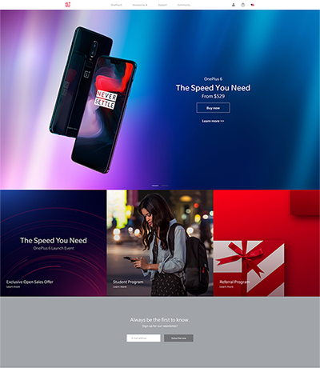
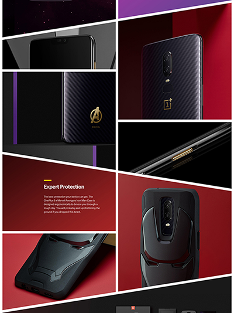
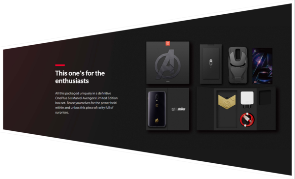
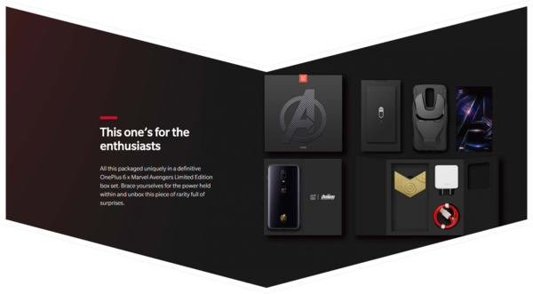
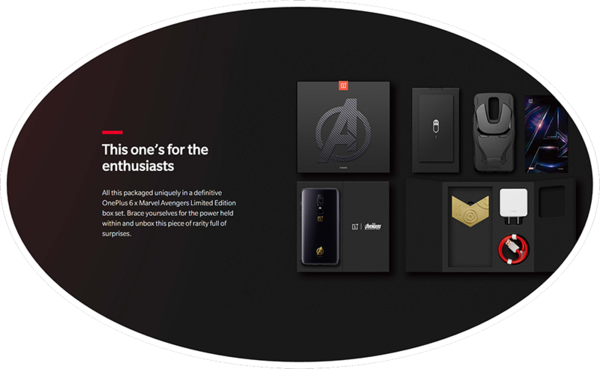
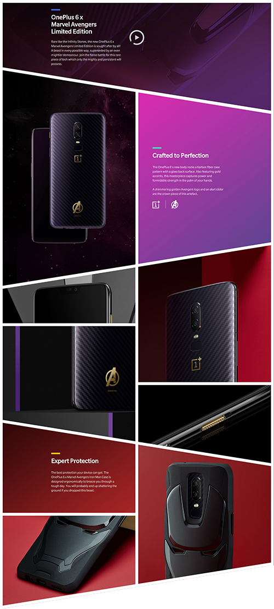

网页多边形布局初探
我们在构建网页页面结构时，一般接触的都是一块块的矩形元素。搭建页面就像砌墙一样，把砖一块块往上叠。以下就是我们平时常见的页面结构。

但是如果是这些砖是平行四边形、梯形、圆形、不规则形状呢。这个用css实现起来就比较难了。

笔者尝试了两种方法来实现这种多边形页面布局。
第一种是利用常规的页面元素，将图片切成多边形的背景透明的图片，如下图所示，作为元素的背景。然后利用绝对定位将元素定位在特定的位置。这样一个个的摆放在一起，就像一个个吊着的挂件，构成我们想要的效果。这上面的白色边框其实是一个个的div元素沿着图片的边缘旋转相应的角度后，定位在图片的边缘。

这种方式虽然能够达到我们的目的，但是存在几个问题：
- 切取图片需要按照特定的要求来切，相当费时费力。
- 随页面缩放时经常会出现图片超出显示区域，或者没有铺满显示区域的问题。
- 如果需要调整版块的大小或者增删版块。几乎要将相关的版块都从切图开始重新做一遍。
- 带透明的png图片文件一般都会比较大，比较费网络流量。
- 做边框时不方便，需要花大量时间来细调。
所以在使用了第一种方法后，在做后续的相同风格的页面时，非常需要调整方法。笔者经过多方参考后，发现了另一种实现方法，并经过稍加改良后，使得开发效率大为提升。下面就来介绍一下具体的实现方法。先看一段示例代码。
1 | <section id="section-phone-package" class="section-phone show"> |
这段代码实现的效果如下：

从代码中可以看出，这个svg显示的是一个多边形，然后这个多边形的背景采用了defs里定义的图片填充。svg的一个优势是可以实现各种形状。我们只要对svg稍作修改就可以做出我们想要的形状。比如：
1 | <polygon points="20,20 1920,500 3820,20 3820,1600 1920,2100 20,1600" style="stroke:#ffffff;fill:url('#pattern-phone-package')"></polygon> |

或者
1 | <ellipse cx="1920" cy="1167" rx="1900" ry="1100" style="stroke-width:40;stroke:#ffffff;fill:url('#pattern-phone-package')" /> |

只要你喜欢，做成什么样子都行。
当然svg里的元素可以实现各种形状，但是svg本身还是矩形的，而且包裹svg的页面元素（如div、section等）还是以矩形形式渲染的。
构建后是如下的效果：

从图上看出其实还是一个个矩形的叠加。接下来可以将margin-top设置成负百分比的方式来实现这些多边形的视觉上连接。经过微调后的效果：

到这里我们就实现了我们想要的效果了。这样做很好的解决了第一种方法中的图片的问题。这种做法有几个有点：
- 切取图片的速度更快。
- 可以大胆的用jpg图片来替换掉png图片。减小了图片大小。
- 结构大小有修改时，只要修改一下svg里的参数就可以轻松完成。增加版块也非常方便。
- 不用担心图片会漏出或者没铺满的问题。
- 对边框支持良好。
当然这两种方法都存在一个问题无法解决，就是如果整个版块是一个可点击区域的话，往往在版块重叠区域会出现无法点击的问题。